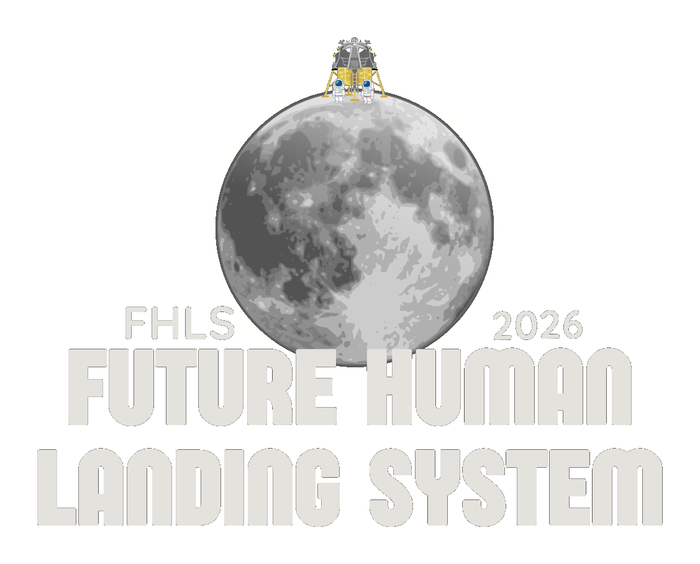

NASA Space Apps Challenge 2026

Click anywhere on the Moon and get the numbers a mission planner needs: how high the Sun and Earth sit above that spot's own horizon, hour by hour, through 2027 and 2028.
NASA LRO / LOLA · explore the whole Moon
Step 1 of 2
This changes how the results are written, not where you can go. You can explore the whole Moon in every mode, and you can switch mode at any time.
Loading the Moon…
If this stays, the 3D viewer could not start in this browser. The site list and the results panel below still work.
Candidate sites
—
A dot marks the largest share or the shortest gap among the pinned sites. It compares these sites only and is not a recommendation: a landing site is chosen on far more than sunlight and a line of sight to Earth.
—
Where a track runs below the skyline, that body is behind terrain. Azimuth is clockwise from lunar north; elevation is degrees above the horizontal.
—
| UTC | Sun az | Sun el | Earth az | Earth el | Sun disc | Power | Comms |
|---|